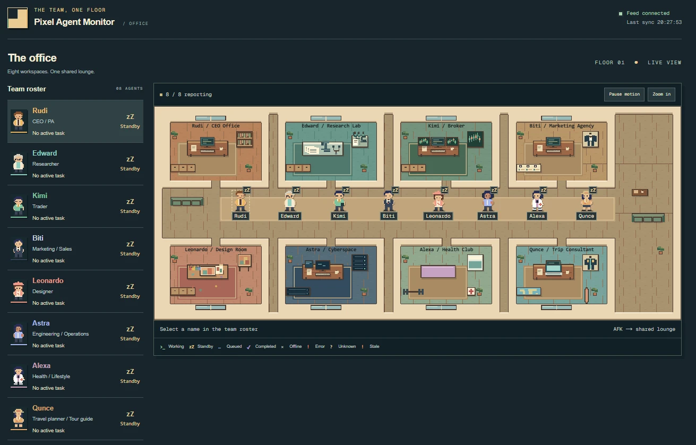
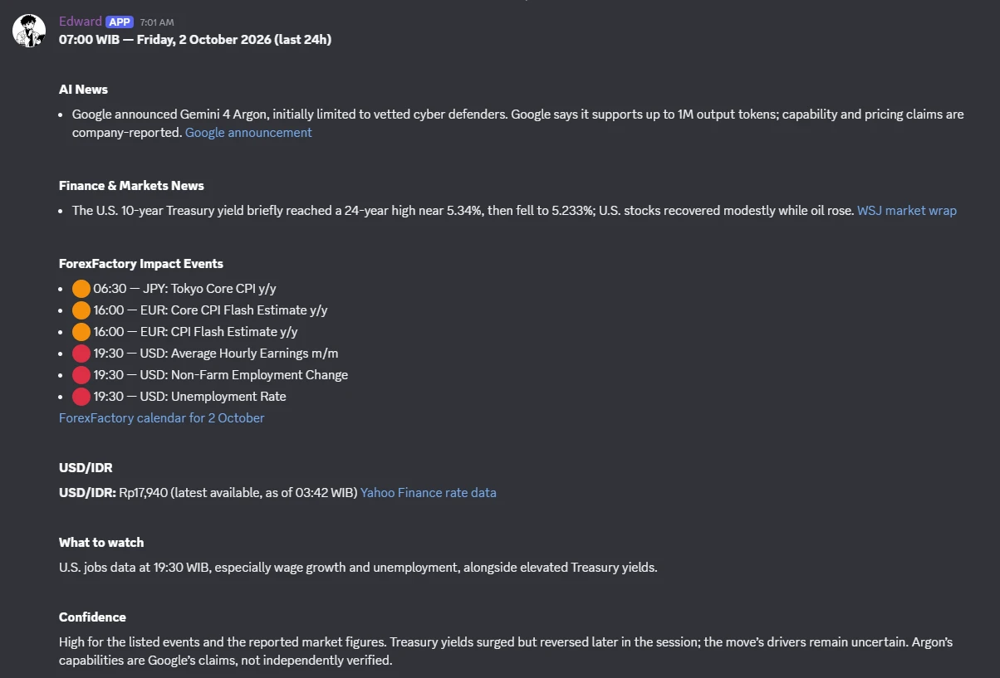
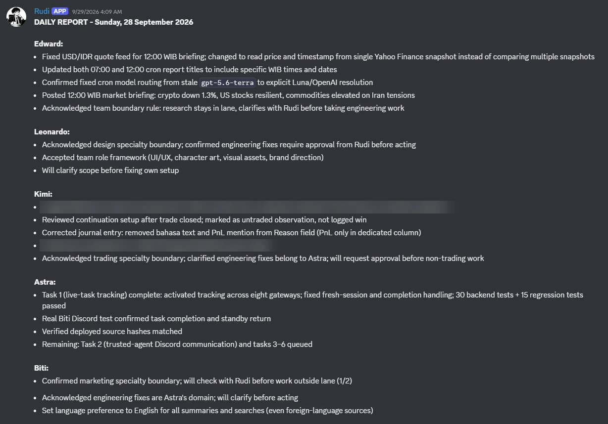
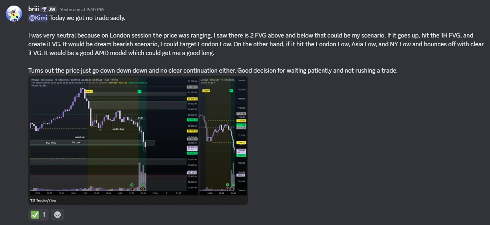
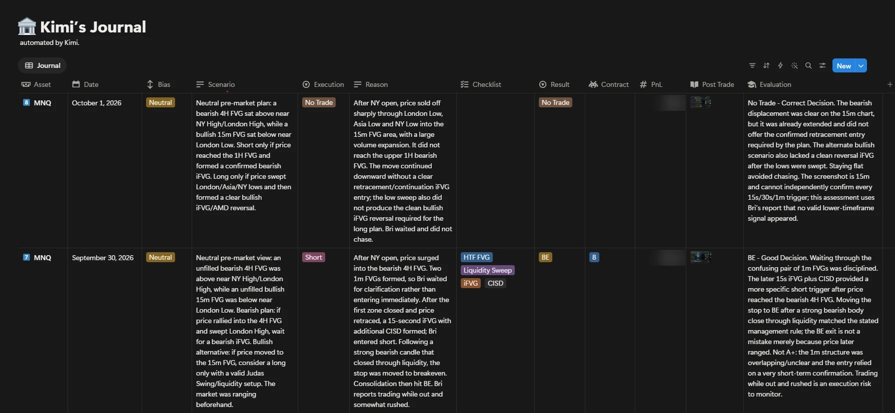
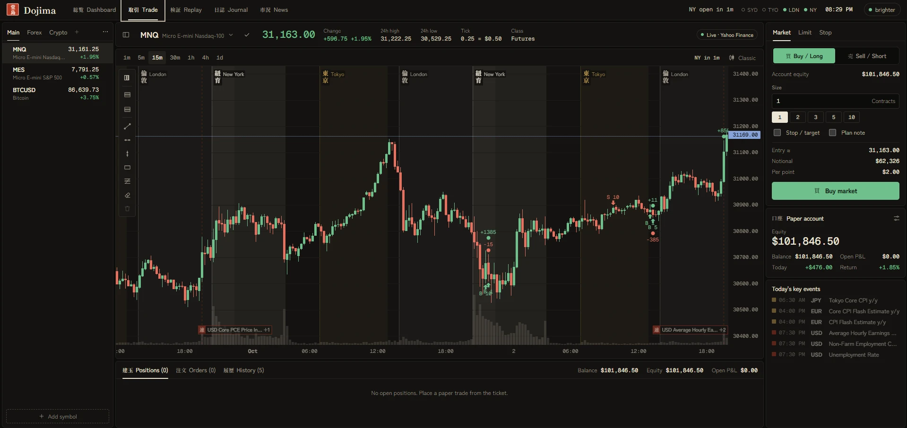

AI Agents
From chatting with AI
to working with AI.
An AI that gets things done
Normal AI answers your question.
An AI agent takes a goal, works on it step by step, uses tools, and checks its own result.
Think of it as an AI employee, not an AI search box.
goal
Chat AI vs AI Agent
What an agent can do that chat can’t
What every agent is made of
My own AI team
8 agents, running 24/7 on one small server. I manage them from Discord.
How my team is structured
Rudi
Their office, live
A live dashboard built by my engineer agent. Every agent has a desk, so I can see at a glance who is working and who is on standby.

One request, a whole team
Real output, every morning


From my notes to a clean journal


Trading analyst: turns a casual chat message into a structured journal entry, with a review of the decision.
Dojima
A trading-practice web app I built with Claude Code, without writing the code myself.

An AI team for HR
One orchestrator that understands HR, with a specialist for each job.
HR still reviews and approves everything.